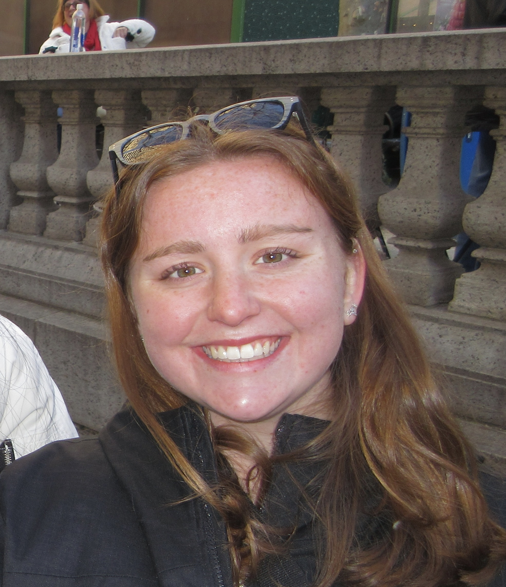

About me:
Erin Fels is a sophomore at the University of Colorado, Boulder. She
is studying Creative Technology and Design and Computer Science with a minor in Business. Erin
is interested in themed entertainment and immersive technologies. She is a part of CU’s
Engineering
Honor Society, Tau Beta Pi and is also the current Vice-President and past social media chair
for CU’s new Themed Park Engineering and Design Club,
where she has competed in the Ride Engineering Competition and Toronto Metropolitan Thrill Desin
Compeition Qualifier. Erin works as a Learning Assistant for a phyiscal computing class, Object,
for Creative Technology and Design at the Atlas Institute. In addition, she is at the CU
Recreation
Center in Guest Services, helping guests have great experience. She has also worked at the
Unstable Design Lab, where she focused on interactive technologies and helping people find the
value in e-textiles. Erin is a hardworking and receptive person. Her goals in the future are to
work at a themed entertainment company that creates exciting experiences.